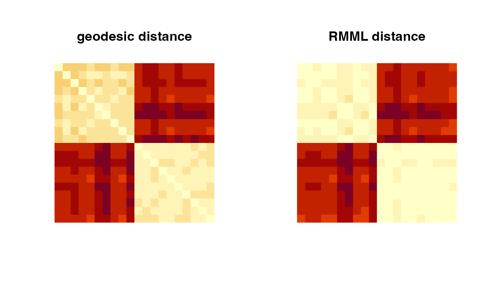

Given \(N\) observations \(X_1, X_2, \ldots, X_N \in \mathcal{M}\) and
corresponding label information, riem.rmml computes pairwise distance of data under Riemannian Manifold Metric Learning
(RMML) framework based on equivariant embedding. When the number of data points
is not sufficient, an inverse of scatter matrix does not exist analytically so
the small regularization parameter \(\lambda\) is recommended with default value of \(\lambda=0.1\).
riem.rmml(riemobj, label, lambda = 0.1, as.dist = FALSE)
| riemobj | a S3 |
|---|---|
| label | a length-\(N\) vector of class labels. |
| lambda | regularization parameter. If \(\lambda \leq 0\), no regularization is applied. |
| as.dist | logical; if |
a S3 dist object or \((N\times N)\) symmetric matrix of pairwise distances according to as.dist parameter.
Zhu P, Cheng H, Hu Q, Wang Q, Zhang C (2018). “Towards Generalized and Efficient Metric Learning on Riemannian Manifold.” In Proceedings of the Twenty-Seventh International Joint Conference on Artificial Intelligence, 3235--3241. ISBN 978-0-9992411-2-7, doi: 10.24963/ijcai.2018/449 .
#------------------------------------------------------------------- # Distance between Two Classes of SPD Matrices # # Class 1 : Empirical Covariance from Standard Normal Distribution # Class 2 : Empirical Covariance from Perturbed 'iris' dataset #------------------------------------------------------------------- ## DATA GENERATION data(iris) ndata = 10 mydata = list() for (i in 1:ndata){ mydata[[i]] = stats::cov(matrix(rnorm(100*4),ncol=4)) } for (i in (ndata+1):(2*ndata)){ tmpdata = as.matrix(iris[,1:4]) + matrix(rnorm(150*4,sd=0.5),ncol=4) mydata[[i]] = stats::cov(tmpdata) } myriem = wrap.spd(mydata) mylabs = rep(c(1,2), each=ndata) ## COMPUTE GEODESIC AND RMML PAIRWISE DISTANCE pdgeo = riem.pdist(myriem) pdmdl = riem.rmml(myriem, label=mylabs) ## VISUALIZE opar = par(no.readonly=TRUE) par(mfrow=c(1,2), pty="s") image(pdgeo[,(2*ndata):1], main="geodesic distance", axes=FALSE) image(pdmdl[,(2*ndata):1], main="RMML distance", axes=FALSE)